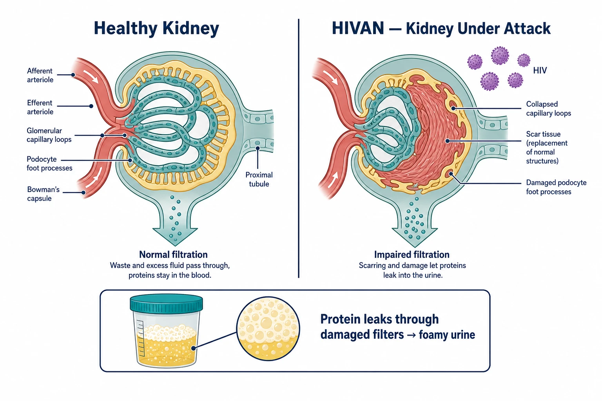
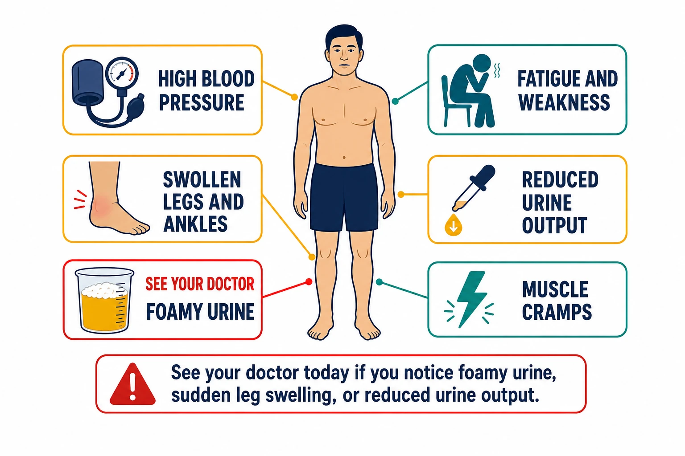
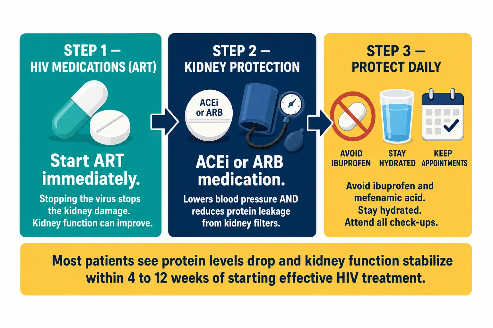

What Is HIVAN?Ano ang HIVAN?Unsa ang HIVAN?Nanu ya ing HIVAN?

How HIVAN damages kidney filters — healthy glomerulus (left) vs collapsed, scarred glomerulus with HIV (right). Protein leaking through damaged filters causes foamy urine.HIV and the KidneysHIV at ang mga BatoHIV ug ang mga BatoHIV at ing mga Bato
HIV does not just affect your immune system. The virus can directly infect cells in your kidneys — particularly the filtering cells called podocytes — causing them to collapse and scar. This is called HIV-associated nephropathy, or HIVAN. It is one of the most serious kidney complications of HIV, but it is also one of the most responsive to treatment when caught early. Acute kidney injury (a sudden drop in kidney function) affects about 1 in 4 people living with HIV — making kidney health an important priority from the moment of diagnosis (Kidney Int 2026).Hindi lamang nakakaapekto ang HIV sa iyong immune system. Ang virus ay maaaring direktang mahawa ang mga selula sa iyong mga bato — lalo na ang mga filtering cells na tinatawag na podocytes — na nagdudulot ng pagguho at pag-scarring ng mga ito. Ito ang tinatawag na HIV-associated nephropathy, o HIVAN. Isa ito sa pinaka-seryosong komplikasyon sa bato dulot ng HIV, ngunit isa rin ito sa pinaka-tumutugon sa paggamot kapag nahuli nang maaga.Dili lang ang immune system ang giaapektuhan sa HIV. Ang virus mahimong direktang makapasulod sa mga selula sa imong mga bato — ilabina ang mga filtering cells nga gitawag ug podocytes — nga naghimo kanila nga mosugod sa pagsira ug pag-ubo. Kini ang gitawag ug HIV-associated nephropathy, o HIVAN. Kini usa sa labing grabe nga komplikasyon sa bato tungod sa HIV, apan usa usab kini sa labing tumugon sa pagtambal kon madiskubre og sayo.E HIV aliwa yang metung a kapalit king immune system mu. Ing virus malyari yang direktang mahawa king mga selula king bato mu — lalona ing mga filtering cells a tatawag na podocytes — a maging sanhi ning kapaluian at pagkasalanta. Iti ing tatawag na HIV-associated nephropathy, o HIVAN. Metung ya iti kareng pinaka-seryosong komplikasyon king bato bunga ning HIV, ngem metung ya rin iti kareng pinaka-tumutugon king lunas ampon mahuli nang maaga.
Who Is at Higher Risk?Sino ang Mas Nasa Panganib?Kinsa ang Mas Naa sa Peligro?Ninu ing Mas Nasa Peligro?
HIVAN is most common in people whose HIV is not under control — those with a high viral load and low CD4 count. It is more common in people of African ancestry due to a gene called APOL1. In the Philippines, HIVAN is increasingly seen in MSM (men who have sex with men) and individuals presenting late to HIV care. People who have stopped or never started HIV treatment are at highest risk.Ang HIVAN ay pinakakaraniwan sa mga taong hindi kontrolado ang kanilang HIV — yaong may mataas na viral load at mababang bilang ng CD4. Mas karaniwan ito sa mga taong may African ancestry dahil sa isang gene na tinatawag na APOL1. Sa Pilipinas, ang HIVAN ay lalong nakikita sa MSM (mga lalaking nakikipagtalik sa kapwa lalaki) at sa mga indibidwal na nahuling dumating sa pag-aalaga ng HIV. Ang mga taong huminto o hindi pa nakapagsimula ng gamot para sa HIV ay nasa pinakamataas na panganib.Ang HIVAN labing komon sa mga tawo nga wala makontrol ang ilang HIV — kadtong adunay taas nga viral load ug ubos nga bilang sa CD4. Komon kini sa mga tawo sa African ancestry tungod sa gene nga gitawag ug APOL1. Sa Pilipinas, ang HIVAN labi na nakita sa MSM (mga lalaki nga nakigsex sa kauban nga lalaki) ug sa mga indibidwal nga ulahi sa pag-atiman sa HIV. Ang mga tawo nga naghunong o wala pa magsugod og tambal para sa HIV ang labing naa sa peligro.Ing HIVAN pinakakaraniwan king mga tao a e kontrolado ing HIV da — kadaya a mayabe viral load at mababa bilang ning CD4. Kararaniwan ya iti king mga tao ning African ancestry dahil king metung a gene a tatawag na APOL1. King Pilipinas, ing HIVAN lalu nang makita king MSM (mga lalaki a makipagtalik king kapuang lalaki) at king mga indibidwal a mahuli a dumating king pag-aalaga ning HIV. Ing mga tao a tinalo o e pa nasimula ing gamot para king HIV ing pinakas nasa peligro.
HIVAN is not the same as kidney damage from HIV medicationsHindi kapareho ng HIVAN ang pinsala sa bato mula sa gamot para sa HIVAng HIVAN dili managsama sa kadaut sa bato gikan sa tambal sa HIVE paras ing HIVAN ampo ing pinsala king bato bunga ning gamot para king HIV
Some older HIV drugs — particularly tenofovir DF (TDF), found in older regimens — can also harm the kidneys, but through a different mechanism. Both are preventable and manageable with the right treatment. Your doctor can tell which type of kidney problem you have and adjust your medications accordingly.Ang ilang mas lumang gamot para sa HIV — lalo na ang tenofovir DF (TDF), na makikita sa mas lumang mga regimen — ay maaari ring makapinsala sa mga bato, ngunit sa pamamagitan ng ibang mekanismo. Parehong maiiwasan at maaaring pamahalaan ang dalawa sa tamang paggamot. Masasabi sa inyo ng inyong doktor kung anong uri ng problema sa bato ang mayroon kayo at ia-adjust ang inyong mga gamot nang naaayon.Ang pipila ka mas daang tambal sa HIV — ilabina ang tenofovir DF (TDF), nga makita sa mas daang mga regimen — mahimong makasamad usab sa mga bato, apan pinaagi sa lain nga mekanismo. Pareho silang mapugngan ug mapangatigonan sa husto nga pagtambal. Masuginlan ka sa imong doktor kung unsang klase sa problema sa bato ang imong naa ug iayad ang imong mga tambal sumala niana.Karing datang gamot para king HIV — lalona ing tenofovir DF (TDF), a makita king dating mga regimen — malyari ding makapinsala king mga bato, ngem iba ing mekanismo. Oba ngang maiwasan at mapamamahala iti sa tamang lunas. Masabi keka ning doktor mu nung nung uri ning problema king bato ing oras mu ampon ia-adjust ing gamot mu ayon deta.
Symptoms and Warning SignsMga Sintomas at BabalaMga Sintomas ug Senyales sa PahimangnoMga Simtomas at Babala

HIVAN warning signs — foamy urine and sudden leg swelling require same-day medical attention.HIVAN is often silent in the early stagesAng HIVAN ay madalas na walang sintomas sa mga unang yugtoAng HIVAN kasagaran nga hilom sa mga unang yugtoIng HIVAN madalas a malet king mga unang panahon
Many patients feel completely normal while significant kidney damage is already occurring. Do not wait for symptoms — if you are living with HIV, regular kidney monitoring is essential.Maraming pasyente ang nakakaramdam na ganap na normal habang nagaganap na ang malaking pinsala sa bato. Huwag maghintay ng mga sintomas — kung ikaw ay naninirahan na may HIV, mahalaga ang regular na pagsubaybay sa bato.Daghan ka pasyente ang nakaramdam nga normal kaayo samtang nagahinabo na ang dakong kadaut sa bato. Ayaw paghulat sa mga sintomas — kon ikaw nagpuyo nga adunay HIV, importante ang regular nga pagmonitor sa bato.Merakung pasyente ing maramdam a ganap a normal nung e pa nasimula ing marakal a pinsala king bato. Eka maghintay ning mga simtomas — nung ikaw naninirahan ampo ang HIV, mahalaga ing regular a pamaniksik king bato.
Early signs (often missed)Mga maagang tanda (madalas na hindi napapansin)Sayo nga mga senyales (kasagaran nga wala mapansin)Mga unang tanda (madalas a e napapansin)
Foamy or frothy urine (protein leaking into urine); slightly elevated blood pressure; mild swelling of the ankles by end of day; fatigue that seems worse than usual.Maybula o mapulang ihi (may protina na tumutulo sa ihi); bahagyang tumaas na presyon ng dugo; banayad na pamamaga ng bukung-bukong sa katapusan ng araw; pagod na tila mas malala kaysa karaniwan.Mabukhad o mahumok nga ihi (may protina nga nagaawas sa ihi); gamay nga taas sa presyon sa dugo; hinay nga pamamahit sa bukobuko sa katapusan sa adlaw; kaluya nga daw mas grabe kay normal.Maybula o maputla ing ihi (protina a tumutulo king ihi); bahagyang tumaas ing presyon ning dugu; banayad a pamamaga king bukung-bukong sa katapusan ning aldo; kapagalan a tila mas grabe kaysa dati.
Later signs (seek care immediately)Mga huling tanda (humingi ng pag-aalaga agad-agad)Ulahing mga senyales (mangita og atiman dayon)Mga huring tanda (humanap na ning pag-aalaga agad)
Marked swelling of legs, feet, and face; very foamy urine that persists; high blood pressure that is difficult to control; decreased urine output; severe fatigue, loss of appetite, and nausea.Kapansin-pansing pamamaga ng mga paa, paa, at mukha; napaka-mabulang ihi na hindi nawawala; mataas na presyon ng dugo na mahirap kontrolin; pagbaba ng output ng ihi; matinding pagod, pagkawala ng gana sa pagkain, at pagduduwal.Klaro nga pamamahit sa mga tiil, tiil, ug nawong; grabe kaayo nga mabukhad nga ihi nga dili mawala; taas nga presyon sa dugo nga lisud kontrolon; pagkunhod sa output sa ihi; grabe nga kaluya, nawad-an og gana sa pagkaon, ug pagsuka.Kapansin-pansing pamamaga king mga saka, saka, at muwa; mapakabula ing ihi a e nawawala; matas a presyon ning dugu a mahirap kontrolin; pagbaba ning output ning ihi; matinding kapagalan, pagkawala ning gana sa pagkain, at pagsusuka.
Foamy urine is one of the most important warning signs — it means protein is leaking through damaged kidney filters. Hold a glass of your urine up to the light. If it looks like beer foam that persists for more than a minute, tell your doctor immediately.Ang maybulang ihi ay isa sa pinaka-mahalagang babala — ibig sabihin ay lumalabas ang protina sa pamamagitan ng mga sirang filter ng bato. Hawakan ang isang baso ng iyong ihi laban sa liwanag. Kung mukhang bula ng serbesa na nananatili nang higit sa isang minuto, sabihin agad sa iyong doktor.Ang mabukhad nga ihi usa sa labing importante nga senyales sa pahimangno — nagkahulogan kini nga ang protina nagawas pinaagi sa mga kadaut nga filter sa bato. Kuhaa ang usa ka baso sa imong ihi ug ibutang batok sa kahayag. Kon murag bula sa serbesa nga nagpabilin og kapin sa usa ka minuto, sultihi dayon ang imong doktor.Ing maybula a ihi metung kareng pinakamahalaga a babala — kahulugan nitang tumutulo ing protina malapung sirang filter ning bato. Mangawani ning baso ning ihi mu ampon iantitay king liwanag. Nung murang bula ning serbesa a nanatili ng labing metung minutu, sabian agad ing doktor mu.
How Is It Diagnosed?Paano Ito Nadi-diagnose?Giunsa Kini Pag-diagnose?Nanung Paraan Ning Pag-diagnose?
Blood test (creatinine and eGFR)Pagsusuri ng dugo (creatinine at eGFR)Pagsusi sa dugo (creatinine ug eGFR)Pagsusuri ning dugu (creatinine at eGFR)
This measures how well your kidneys filter waste. Your doctor calculates your eGFR — a number that tells you what percentage of kidney function you have left. Normal is above 60.Sinusukat nito kung gaano kahusay ang mga bato mo sa pag-filter ng mga basura. Kinakalkula ng doktor mo ang iyong eGFR — isang numero na nagsasabi kung anong porsyento ng function ng bato ang natitira pa sa iyo. Ang normal ay higit sa 60.Gisukat niini kung unsa ka maayo ang imong mga bato sa pagsala sa basura. Gicomputar sa imong doktor ang imong eGFR — usa ka numero nga nagsulti kung unsa ka porsyento ang function sa bato ang anaa pa kanimo. Ang normal mao ang labaw sa 60.Iting susukat kung gaano kahusay ing mga bato mu a mag-filter ning mga dumi. Kinakalkula ning doktor mu ing eGFR mu — metung a numero a magsabi kung nanung porsyento ning function ning bato ing natatira pa keka. Ing normal tataas sa 60.
Urine test (protein)Pagsusuri ng ihi (protina)Pagsusi sa ihi (protina)Pagsusuri ning ihi (protina)
A urine dipstick or urine protein-creatinine ratio (UPCR) checks how much protein is leaking. HIVAN typically causes heavy protein leakage — often more than 3.5 grams per day (called nephrotic-range proteinuria).Ang urine dipstick o urine protein-creatinine ratio (UPCR) ay sumusukat kung gaano karaming protina ang tumutulo. Ang HIVAN ay karaniwang nagdudulot ng matinding pagtulo ng protina — madalas na higit sa 3.5 gramo bawat araw (tinatawag na nephrotic-range proteinuria).Ang urine dipstick o urine protein-creatinine ratio (UPCR) mosusi kung pila ang protina nga nagawas. Ang HIVAN kasagaran nagdala sa grabe nga pagawas sa protina — kasagaran labaw sa 3.5 grams kada adlaw (gitawag nga nephrotic-range proteinuria).Ing urine dipstick o urine protein-creatinine ratio (UPCR) sumususukat kung pilan ing protina a tumutulo. Ing HIVAN karaniwan a nagdudulot ning malakas a pagtutulog ning protina — madalas tataas sa 3.5 gramo bawat aldo (tatawag na nephrotic-range proteinuria).
Kidney ultrasoundUltrasound ng batoUltrasound sa batoUltrasound ning bato
In HIVAN, kidneys are often enlarged and echogenic (appear bright on ultrasound) — the opposite of most other kidney diseases where kidneys shrink. This is an important clue for your doctor.Sa HIVAN, ang mga bato ay madalas na pinalaki at echogenic (nagmumukhang maliwanag sa ultrasound) — kabaligtaran ng karamihan sa ibang sakit sa bato kung saan nag-iiit ang mga bato. Ito ay isang mahalagang pahiwatig para sa iyong doktor.Sa HIVAN, ang mga bato kasagaran dagku ug echogenic (gipakita nga hayag sa ultrasound) — kabaliktaran sa kadaghanan sa ubang sakit sa bato diin ang mga bato moubos. Kini usa ka importante nga clue para sa imong doktor.King HIVAN, ing mga bato madalas na pinalalaki at echogenic (magmumukhang maliwanag king ultrasound) — kabaligtaran kareng marakling ibang sakit king bato nung nagsisikut ing mga bato. Ini metung a mahalagang pahiwatig para king doktor mu.
Kidney biopsy (sometimes needed)Biopsy ng bato (kung minsan ay kinakailangan)Biopsy sa bato (usahay gikinahanglan)Biopsy ning bato (paminsan ay kailangan)
A small needle sample of kidney tissue is examined under a microscope. The pattern seen in HIVAN is called "collapsing FSGS" — scarred, collapsed kidney filters. Not everyone needs a biopsy; your doctor will decide based on your situation.Ang isang maliit na sample ng tissue ng bato gamit ang karayom ay sinusuri sa ilalim ng mikroskopyo. Ang pattern na makikita sa HIVAN ay tinatawag na "collapsing FSGS" — mga sirang at nakulapang filter ng bato. Hindi lahat ay nangangailangan ng biopsy; ang inyong doktor ang magpapasya batay sa inyong sitwasyon.Ang gamay nga sample sa tissue sa bato gamit ang dagom sinususi ubos sa mikroskopyo. Ang pattern nga makita sa HIVAN gitawag nga "collapsing FSGS" — nadaut ug nakulapan nga filter sa bato. Dili tanan nagkinahanglan og biopsy; ang imong doktor magdesisyon base sa imong sitwasyon.Metung a maliit a sample ning tissue ning bato gamitten ing karayom sinusuri king ilalam ning mikroskopyo. Ing pattern a makita king HIVAN tatawag na "collapsing FSGS" — mga sirang at narugsak a filter ning bato. E amin kailangan ning biopsy; ing doktor mu magpapasya base king oras mu.
HIV viral load and CD4 countViral load ng HIV at bilang ng CD4Viral load sa HIV ug bilang sa CD4Viral load ning HIV at bilang ning CD4
These confirm HIV status and degree of immune suppression. HIVAN is most common when viral load is high and CD4 is low.Tinutukoy ng mga ito ang katayuan ng HIV at antas ng pagpipigil sa immune. Ang HIVAN ay pinakakaraniwan kapag mataas ang viral load at mababa ang CD4.Kini nagkumpirma sa status sa HIV ug grado sa pagpugong sa immune. Ang HIVAN labing komon kon taas ang viral load ug ubos ang CD4.Iti kinukumpirma ing katayuan ning HIV at antas ning pag-suppress king immune. Ing HIVAN pinakakaraniwan nung matas ing viral load at mababa ing CD4.
TreatmentPaggamotPagtambalLunas

Three steps to fight HIVAN — ART to stop the virus, ACEi/ARB to protect the filters, and daily habits to preserve what remains. Most patients see improvement within 4–12 weeks.The most powerful treatment for HIVAN is HIV medication (ART)Ang pinaka-mabisang paggamot para sa HIVAN ay ang gamot para sa HIV (ART)Ang labing gamhanan nga pagtambal alang sa HIVAN mao ang tambal sa HIV (ART)Ing pinakamakapangyarihang lunas para king HIVAN ing gamot para king HIV (ART)
Starting or optimizing your HIV treatment can stop kidney damage — and in many patients, kidney function actually improves after viral suppression is achieved.Ang pagsisimula o pag-optimize ng inyong paggamot sa HIV ay makakatigil ng pinsala sa bato — at sa maraming pasyente, ang function ng bato ay talagang nag-iimprove pagkatapos makamit ang viral suppression.Ang pagsugod o pag-optimize sa imong pagtambal sa HIV makahunong sa kadaut sa bato — ug sa daghang pasyente, ang function sa bato matuod nagaayo human makab-ot ang viral suppression.Ing pagsimula o pag-optimize ning lunas mu king HIV makapaghinto ning pinsala king bato — at king merakung pasyente, ing function ning bato talaga nag-iimprove pag-achieve ning viral suppression.
Start or optimize your HIV medications (ART)Simulan o i-optimize ang iyong mga gamot para sa HIV (ART)Sugdan o i-optimize ang imong mga tambal para sa HIV (ART)Simulan o i-optimize ing gamot mu para king HIV (ART)
If you are not yet on HIV treatment, start immediately — do not wait. WHO recommends starting HIV treatment on the same day as diagnosis and having your kidney function checked every year if you are at higher risk. If you are already on treatment but your viral load is detectable, speak to your HIV doctor about adjusting your regimen. The goal is undetectable viral load (HIV RNA <50 copies/mL). (Kidney Int 2026)Kung hindi ka pa umaangkop sa paggamot para sa HIV, magsimula agad — huwag maghintay. Kung nasa paggamot ka na ngunit mahahalata ang iyong viral load, kausapin ang iyong doktor sa HIV tungkol sa pag-aayos ng inyong regimen. Ang layunin ay hindi mahahalagang viral load (HIV RNA <50 copies/mL).Kon wala pa ikaw sa pagtambal para sa HIV, magsugod dayon — ayaw paghulat. Kon naa na ikaw sa pagtambal apan makat-onan ang imong viral load, sultihi ang imong HIV doctor bahin sa pag-adjust sa imong regimen. Ang katuyoan mao ang dili matukod nga viral load (HIV RNA <50 copies/mL).Nung e ka pa umaangkop king lunas para king HIV, magsimula agad — eka maghintay. Nung nang nasa lunas ka ngem mahahalata ing viral load mu, kausapin ing doktor mu king HIV tungkol king pag-adjust ning regimen mu. Ing layunin e mahahalata a viral load (HIV RNA <50 copies/mL).
Use the right HIV medicationsGamitin ang tamang mga gamot para sa HIVGamiton ang husto nga tambal para sa HIVGamitin ing tamang gamot para king HIV
Some HIV drugs are safer for kidneys than others. Tenofovir alafenamide (TAF — found in newer combinations like Biktarvy or Descovy) is much safer for kidneys than the older tenofovir DF (TDF — in older pills like Truvada or Atripla). Tell your doctor if you are still on TDF so you can discuss switching.Ang ilang gamot para sa HIV ay mas ligtas para sa bato kaysa iba. Ang tenofovir alafenamide (TAF — makikita sa mas bagong kombinasyon tulad ng Biktarvy o Descovy) ay mas ligtas sa bato kaysa sa mas lumang tenofovir DF (TDF — sa mas lumang tableta tulad ng Truvada o Atripla). Sabihin sa iyong doktor kung nasa TDF ka pa rin para mapag-usapan ang pagpapalit.Ang pipila ka tambal sa HIV mas luwas para sa bato kaysa sa uban. Ang tenofovir alafenamide (TAF — makita sa bag-ong kombinasyon sama sa Biktarvy o Descovy) mas luwas para sa bato kaysa sa mas daang tenofovir DF (TDF — sa mas daang tableta sama sa Truvada o Atripla). Sultihi ang imong doktor kon naa ka pa sa TDF aron mapagpulong ang pagbalhin.Karing gamot para king HIV marakal a mas ligtas para king bato kaysa ibang uri. Ing tenofovir alafenamide (TAF — makita king bagong kombinasyon kagaya ning Biktarvy o Descovy) mas ligtas para king bato kaysa king dating tenofovir DF (TDF — king dating tableta kagaya ning Truvada o Atripla). Sabian ing doktor mu nung nang nasa TDF ka pa para mapag-usapan ing pagpapalit.
Blood pressure control with an ACE inhibitor or ARBKontrol ng presyon ng dugo gamit ang ACE inhibitor o ARBKontrol sa presyon sa dugo gamit ang ACE inhibitor o ARBKontrol ning presyon ning dugu gamitten ing ACE inhibitor o ARB
These blood pressure medications do double duty — they lower blood pressure AND reduce protein leakage from damaged kidneys. Common examples: enalapril, lisinopril (ACE inhibitors) or losartan, valsartan (ARBs). Take them every day, even when you feel well.Ang mga gamot para sa presyon ng dugo na ito ay may dalawang tungkulin — nagpapababa ng presyon ng dugo AT nagbabawas ng pagtutulog ng protina mula sa mga sirang bato. Mga karaniwang halimbawa: enalapril, lisinopril (ACE inhibitors) o losartan, valsartan (ARBs). Inumin ang mga ito araw-araw, kahit na mayroon kang pakiramdam na mabuti.Kining mga tambal sa presyon sa dugo duha ang katungdanan — magpaubos sa presyon sa dugo UG magpakubus sa pagawas sa protina gikan sa mga kadaut nga bato. Komon nga halimbawa: enalapril, lisinopril (ACE inhibitors) o losartan, valsartan (ARBs). Kuhaon kini matag adlaw, bisan kon maayos ang imong gibati.Iring mga gamot para king presyon ning dugu oba ngang tungkulin — magpapababa ning presyon ning dugu AT magbabawas ning pagtutulog ning protina bunga ning sirang bato. Mga karaniwang halimbawa: enalapril, lisinopril (ACE inhibitors) o losartan, valsartan (ARBs). Inumin iti araldo, maski nung maramdam kang maayos.
Avoid kidney-harmful medicationsIwasan ang mga gamot na nakakasama sa batoLikayi ang mga tambal nga makadaut sa batoIwasan ing mga gamot a makapinsala king bato
NSAIDs (ibuprofen, mefenamic acid, aspirin for pain) damage kidneys — use paracetamol instead. Herbal and traditional remedies — many are toxic to kidneys; tell your doctor about everything you take. If you need a CT scan with contrast dye, make sure your doctor knows about your kidney disease beforehand.Ang NSAIDs (ibuprofen, mefenamic acid, aspirin para sa sakit) ay nagdudulot ng pinsala sa bato — gumamit ng paracetamol sa halip. Ang mga halamang gamot at tradisyunal na lunas — marami ay nakakalason sa bato; sabihin sa inyong doktor ang lahat ng inyong inumin. Kung kailangan ninyo ng CT scan na may contrast dye, tiyaking alam ng inyong doktor ang inyong sakit sa bato bago ito gawin.Ang NSAIDs (ibuprofen, mefenamic acid, aspirin para sa sakit) makadaut sa bato — gamita ang paracetamol sa baylo. Ang mga halamang tambal ug tradisyunal nga lunas — daghan ang makahilo sa bato; sultihi ang imong doktor ang tanan nimo nga giinom. Kon kinahanglan mo og CT scan nga adunay contrast dye, siguroha nga nahibalo ang imong doktor sa imong sakit sa bato daan.Ing NSAIDs (ibuprofen, mefenamic acid, aspirin para king sakit) makapinsala king bato — gamitin ing paracetamol kesa. Ing mga herbal at tradisyunal a gamot — merakung makalalason king bato; sabian ing doktor mu ing amin a inyong inumin. Nung kailangan kang CT scan ampo contrast dye, siguraduhin a alam na ning doktor mu ing sakit mu king bato.
Protecting Your Kidneys Long-TermPangalagaan ang Inyong mga Bato sa Mahabang PanahonPagpanalipod sa Imong mga Bato sa Dugay nga PanahonPangalagaan Ing Bato Mu king Mahabang Panahon
Stay on your HIV medications — every dayHuwag huminto sa inyong mga gamot para sa HIV — araw-arawPadayon pag-inum og imong mga tambal para sa HIV — matag adlawEka huminto king gamot mu para king HIV — araldo
Missing doses allows the virus to replicate and re-damage kidney cells. Even brief treatment interruptions can cause significant setbacks. If you are having trouble taking medications — due to cost, side effects, or stigma — tell your HIV care team. There are assistance programs and solutions available.Ang pagmimiss ng dosis ay nagbibigay-daan sa virus na mag-replicate at muling makapinsala sa mga selula ng bato. Maging ang maikling pagkaputol ng paggamot ay maaaring magdulot ng malaking pag-atras. Kung nahihirapan kang uminom ng mga gamot — dahil sa gastos, epekto, o stigma — sabihin sa inyong koponan ng pag-aalaga sa HIV. Mayroon itong mga programa sa tulong at mga solusyon.Ang pagpalagpas sa dosis nagtugot sa virus nga mag-replicate ug usab makadaut sa mga selula sa bato. Bisan ang hamubo nga pagpugong sa pagtambal mahimong magdala og dakong pag-atras. Kon nagalisud ka sa pag-inum sa mga tambal — tungod sa gastos, side effect, o stigma — sultihi ang imong koponan sa HIV care. Adunay mga programa sa tabang ug mga solusyon.Ing pagmimiss ning dosis nagpapahintulot king virus na mag-replicate at muling makapinsala king mga selula ning bato. Maski maikling paghinto king lunas makapagdulot ning marakal a pag-atras. Nung nahihirapan kang uminom ning mga gamot — dahil king gastos, epekto, o stigma — sabian ing koponan ning pag-aalaga mu king HIV. Meron itong mga programa sa tulong at mga solusyon.
Get your kidneys checked regularlyIpasuri ang inyong mga bato nang regularIpasukit ang imong mga bato sa regularIpasuri ing bato mu nang regular
Your doctor should check your creatinine, eGFR, and urine protein at every visit — or at minimum every 6 months. More frequent monitoring (every 3 months) is recommended if you are on TDF, have diabetes or hypertension, or already have reduced kidney function.Dapat suriin ng inyong doktor ang inyong creatinine, eGFR, at urine protein sa bawat bisita — o hindi bababa sa bawat 6 na buwan. Mas madalas na pagmamatyag (bawat 3 buwan) ang inirekomenda kung ikaw ay nasa TDF, may diabetes o hypertension, o mayroon nang nabawasang function ng bato.Kinahanglan nga isukit sa imong doktor ang imong creatinine, eGFR, ug urine protein sa matag bisita — o labing menos matag 6 ka bulan. Mas kanunay nga pagmonitor (matag 3 bulan) girekomenda kon naa ka sa TDF, adunay diabetes o hypertension, o aduna na bahin nga nabubos nga function sa bato.Dapat suriin ning doktor mu ing creatinine, eGFR, at urine protein mu sa bawat bisita — o hindi baba sa bawat 6 bulan. Mas madalas a pamaniksik (bawat 3 bulan) irinikomenda nung nasa TDF ka, may diabetes o hypertension, o mayroon nang nabawasang function ning bato.
Control blood pressureKontrolin ang presyon ng dugoKontrolon ang presyon sa dugoKontrolin ing presyon ning dugu
Target: below 130/80 mmHg with HIVAN. Take your ACE inhibitor or ARB every day. Reduce salt intake. Maintain a healthy weight. Blood pressure control is one of the most important things you can do to slow kidney disease progression.Target: mas mababa sa 130/80 mmHg na may HIVAN. Uminom ng inyong ACE inhibitor o ARB araw-araw. Bawasan ang pagkain ng asin. Mapanatili ang malusog na timbang. Ang kontrol ng presyon ng dugo ay isa sa pinaka-mahahalagang bagay na magagawa mo upang mapabagal ang pag-unlad ng sakit sa bato.Target: ubos sa 130/80 mmHg nga adunay HIVAN. Inum-a ang imong ACE inhibitor o ARB matag adlaw. Pag-ubosi ang asin sa pagkaon. Hupti ang maayong timbang. Ang kontrol sa presyon sa dugo usa sa labing importante nga mahimo mo aron mapahinay ang pag-abot sa sakit sa bato.Target: mas mababa sa 130/80 mmHg ampo HIVAN. Inumin ing ACE inhibitor o ARB mu araldo. Bawasan ing asin sa pagkain. Panatilihin ing malusog a timbang. Ing kontrol ning presyon ning dugu metung kareng pinakamahalaga a magagawa mo para mapabagal ing pag-unlad ning sakit king bato.
Protect what remains — avoid all nephrotoxinsPangalagaan ang natitira — iwasan ang lahat ng nephrotoxinsPanalipdi ang nahibilin — likayi ang tanan nga nephrotoxinsPangalagaan ing natatira — iwasan ing amin nephrotoxins
No NSAIDs for pain — use paracetamol. No traditional herbal medicines without disclosing them to your doctor. Drink adequate water (6–8 glasses per day unless your doctor restricts fluids). Avoid heavy alcohol — it raises blood pressure and worsens kidney disease.Walang NSAIDs para sa sakit — gumamit ng paracetamol. Walang tradisyunal na halamang gamot nang hindi isinasaad sa inyong doktor. Uminom ng sapat na tubig (6–8 baso bawat araw maliban kung pinaghigpitan ng inyong doktor ang fluids). Iwasan ang mabigat na pag-inom ng alak — nagpapataas ito ng presyon ng dugo at nagpapalala ng sakit sa bato.Walay NSAIDs para sa sakit — gamita ang paracetamol. Walay tradisyunal nga tambal nga halaman nga wala ipahibalo sa imong doktor. Inum-a og igo nga tubig (6–8 ka baso kada adlaw gawas kon gibabagan sa imong doktor ang fluids). Likayi ang grabe nga pag-inum og alak — nagpataas kini sa presyon sa dugo ug nagpalala sa sakit sa bato.E NSAIDs para king sakit — gamitin ing paracetamol. E tradisyunal a halamang gamot a e sasabiyan ing doktor mu. Inumin ing sapat a tubig (6–8 baso bawat aldo maliban nung pinihalay ning doktor mu ing fluids). Iwasan ing mabigat a pag-inum ning alak — nagpapataas iti ning presyon ning dugu at nagpapalala ning sakit king bato.
NutritionNutrisyonNutrisyonNutrisyon
Adequate protein intake is generally appropriate in early HIVAN — speak to a dietitian, as restriction is not always needed. Reduce salt to control blood pressure and swelling. Control blood sugar if you have diabetes.Ang sapat na pagkain ng protina ay karaniwang angkop sa maagang HIVAN — kausapin ang isang dietitian, dahil hindi laging kailangan ng pagbabawas. Bawasan ang asin upang kontrolin ang presyon ng dugo at pamamaga. Kontrolin ang asukal sa dugo kung may diabetes ka.Ang igo nga pag-inum sa protina kasagaran angay sa sayo nga HIVAN — pakigsulti sa usa ka dietitian, kay dili kanunay gikinahanglan ang restriksyon. Pag-ubosi ang asin aron makontrol ang presyon sa dugo ug pamamahit. Kontrolon ang asukar sa dugo kon adunay diabetes ka.Ing sapat a pagkain ning protina karaniwan a angkop king unang HIVAN — kausapin ing metung a dietitian, dahil e lagi kailangan ing restriksyon. Bawasan ing asin para kontrolin ing presyon ning dugu at pamamaga. Kontrolin ing asukal king dugu nung may diabetes ka.
Living With Kidney Disease and HIVPamumuhay na may Sakit sa Bato at HIVPagpuyo nga Adunay Sakit sa Bato ug HIVPamumuhay Ampo Sakit king Bato at HIV
If your kidneys failKung mabigo ang inyong mga batoKon mapakyas ang imong mga batoNung e masuway ing bato mu
Kidney failure from HIVAN is not a death sentence. Both hemodialysis (HD) and peritoneal dialysis (PD) are available for people living with HIV and work just as well as in HIV-negative patients. HIV is no longer a barrier to kidney transplant — in the Philippines, HIV-positive patients can be evaluated for transplant if HIV is well controlled on ART. With viral suppression achieved, transplant outcomes are now comparable to those seen in HIV-negative recipients. The donor pool has also grown, with HIV-positive donors now able to donate to HIV-positive recipients with good results (Kidney Int 2026).Ang pagpalya ng bato mula sa HIVAN ay hindi kamatayan. Ang parehong hemodialysis (HD) at peritoneal dialysis (PD) ay available para sa mga taong may HIV at gumagana nang maayos tulad ng sa mga pasyenteng walang HIV. Ang HIV ay hindi na hadlang sa transplant ng bato — sa Pilipinas, ang mga HIV-positive na pasyente ay maaaring suriin para sa transplant kung kontrolado ang HIV sa ART.Ang pagkapalyas sa bato gikan sa HIVAN dili usa ka sentensya sa kamatayon. Ang pareho nga hemodialysis (HD) ug peritoneal dialysis (PD) magamit para sa mga tawo nga adunay HIV ug nagtrabaho og maayo sama sa mga pasyente nga wala'y HIV. Ang HIV dili na usa ka babag sa transplant sa bato — sa Pilipinas, ang mga HIV-positive nga pasyente mahimong susihon para sa transplant kon maayo ang kontrol sa HIV pinaagi sa ART.Ing pagpalya ning bato bunga ning HIVAN e kamatayan. Oba ngang hemodialysis (HD) at peritoneal dialysis (PD) available para king mga taong may HIV at gumagana nang maayos kagaya king mga pasyenteng walang HIV. Ing HIV e na hadlang king transplant ning bato — king Pilipinas, ing mga HIV-positive a pasyente malyari nang suriin para king transplant nung kontrolado ing HIV king ART.
Mental health and adherenceKalusugan ng isip at pagsunod sa gamotKahimsog sa hunahuna ug pagsunod sa tambalKalusugan ning isipan at pagsunod king gamot
Living with both HIV and kidney disease is a significant burden. Depression and stigma are real barriers to medication adherence. Speak openly with your care team. Support groups for PLHIV exist in major Philippine cities. Poor mental health directly affects ART adherence, which directly affects kidney outcomes — treating both together matters.Ang pamumuhay na may parehong HIV at sakit sa bato ay isang malaking pasanin. Ang depression at stigma ay tunay na hadlang sa pagsunod sa gamot. Makipag-usap nang bukas sa inyong koponan ng pag-aalaga. Ang mga support group para sa PLHIV ay mayroon sa malalaking lungsod ng Pilipinas. Ang mahinang kalusugan ng isip ay direktang nakakaapekto sa pagsunod sa ART, na direktang nakakaapekto sa mga resulta ng bato — mahalaga ang paggamot sa dalawa nang sabay.Ang pagpuyo nga adunay pareho nga HIV ug sakit sa bato usa ka dakong pabug-at. Ang depression ug stigma tinuod nga mga hadlang sa pagsunod sa tambal. Makigsulti og bukas sa imong koponan sa pag-atiman. Adunay mga support group para sa PLHIV sa dagkong siyudad sa Pilipinas. Ang daot nga kahimsog sa hunahuna direktang nakaapekto sa pagsunod sa ART, nga direktang nakaapekto sa mga resulta sa bato — importante ang pagtambal sa duha sabay-sabay.Ing pamumuhay ampo oba ngang HIV at sakit king bato metung a marakal a pabigat. Ing depression at stigma tunay a hadlang king pagsunod king gamot. Makipag-usap nang bukas king koponan ning pag-aalaga mu. Meron mga support group para king PLHIV king malalaking lungsod ning Pilipinas. Ing mahinang kalusugan ning isipan direktang nakakaapekto king pagsunod king ART, a direktang nakakaapekto king mga resulta ning bato — mahalaga ing paggamot king oba ngang sabay.
Your care teamAng inyong koponan ng pag-aalagaAng imong koponan sa pag-atimanIng koponan mu ning pag-aalaga
Managing HIVAN requires coordination between your HIV specialist (infectious disease or internal medicine), your nephrologist, and your primary care physician. Bring a complete medication list to every visit. Ask for a written care plan if your appointments are with different doctors on different days.Ang pamamahala ng HIVAN ay nangangailangan ng koordinasyon sa pagitan ng inyong espesyalista sa HIV (sakit na nakakahawa o internal na medisina), ang inyong nephrologist, at ang inyong pangunahing doktor. Magdala ng kumpletong listahan ng gamot sa bawat bisita. Humingi ng nakasulat na plano ng pag-aalaga kung ang inyong mga appointment ay sa iba't ibang doktor sa iba't ibang araw.Ang pagdumala sa HIVAN nagkinahanglan sa koordinasyon tali sa imong espesyalista sa HIV (sakit nga nakakahawa o internal medicine), ang imong nephrologist, ug ang imong primaryong doktor. Magdala og kompleto nga listahan sa tambal sa matag bisita. Mangayo og sinulat nga plano sa pag-atiman kon ang imong mga appointment lain-laing doktor sa lain-laing mga adlaw.Ing pamamahala ning HIVAN kailangan ning koordinasyon sa pag-itan ning espesyalista mu king HIV (sakit a nakakahawa o internal medicine), ing nephrologist mu, at ing pangunahing doktor mu. Magdala ning kumpletong listahan ning gamot sa bawat bisita. Humanap ning nakasulat a plano ning pag-aalaga nung ing mga appointment mu iba't ibang doktor king iba't ibang aldo.
Common QuestionsMga Karaniwang TanongKomon nga mga PangutanaMga Karaniwang Tanong
Can HIVAN be reversed?Maaari bang baligtarin ang HIVAN?Mabaling ba ang HIVAN?Malyari bang ibaligtad ing HIVAN?
Yes — in many patients, especially when HIVAN is caught early and ART is started promptly, kidney function stabilizes and protein in the urine decreases significantly. Some patients recover kidney function they had already lost. The key is starting treatment quickly.Oo — sa maraming pasyente, lalo na kapag nahuli nang maaga ang HIVAN at nagsimula agad ang ART, ang function ng bato ay nag-iistabalisa at ang protina sa ihi ay malaki ang pagbaba. Ang ilang pasyente ay nakabawi ng function ng bato na napalala na. Ang susi ay mabilis na pagsisimula ng paggamot.Oo — sa daghang pasyente, ilabina kon madiskubre og sayo ang HIVAN ug nagsugod dayon ang ART, ang function sa bato nagastabilisa ug ang protina sa ihi nagkubus nang dako. Ang pipila ka pasyente nakabawi sa function sa bato nga nawala na. Ang yawe mao ang dali nga pagsugod sa pagtambal.Oo — king merakung pasyente, lalona nung mahuli nang maaga ing HIVAN at nagsimula agad ing ART, ing function ning bato nag-iistabilisa at ing protina sa ihi malaki ing pagbaba. Karing pasyente nakabawi ning function ning bato a napalala na. Ing susi mabilis a pagsimula ning lunas.
Do I need a kidney biopsy?Kailangan ko ba ng biopsy ng bato?Kinahanglan ba ko og biopsy sa bato?Kailangan ku ning biopsy ning bato?
Not always. If you have HIV, heavy protein in your urine, and enlarged kidneys on ultrasound, your doctor may treat you for HIVAN without a biopsy. A biopsy is recommended when the diagnosis is uncertain, when other kidney diseases need to be ruled out, or when the kidneys are worsening despite ART.Hindi lagi. Kung mayroon kang HIV, mabigat na protina sa iyong ihi, at pinalaking bato sa ultrasound, maaaring gamutin ka ng iyong doktor para sa HIVAN nang hindi na kailangang gumawa ng biopsy. Ang biopsy ay inirerekomenda kapag hindi sigurado ang diagnosis, kapag kailangan i-rule out ang ibang sakit sa bato, o kapag lumalala ang mga bato kahit may ART.Dili kanunay. Kon adunay HIV ka, bug-at nga protina sa imong ihi, ug gipalapdap nga mga bato sa ultrasound, ang imong doktor mahimong gamuton ka para sa HIVAN nga wala na kinahanglan og biopsy. Ang biopsy girekomenda kon dili sigurado ang diagnosis, kon kinahanglan itabak ang ubang sakit sa bato, o kon nagpalala ang mga bato bisan adunay ART.E lagi. Nung may HIV ka, mabigat a protina sa ihi mu, at pinalaking bato sa ultrasound, malyaring gamutin kang doktor mu para king HIVAN e na kailangan ing biopsy. Ing biopsy irinikomenda nung e sigurado ing diagnosis, nung kailangan i-rule out ing ibang sakit king bato, o nung lumalala ing mga bato maski may ART.
Can I still get a kidney transplant if I have HIV?Maaari pa rin ba akong makatanggap ng transplant ng bato kung may HIV ako?Makakuha pa ba ko og transplant sa bato kon adunay HIV ko?Malyari pa rin ba akung makatanggap ning transplant ning bato nung may HIV aku?
Yes. HIV-positive kidney transplant is now performed in specialized centers. PLHIV with well-controlled HIV (undetectable viral load) on stable ART are eligible for evaluation. When viral suppression is maintained, outcomes are comparable to HIV-negative recipients. The donor pool has also expanded — HIV-positive donors can now donate to HIV-positive recipients, which helps more people get access to transplant (Kidney Int 2026). Discuss this with your nephrologist if you are approaching kidney failure.Oo. Ang HIV-positive na transplant ng bato ay ginagawa na ngayon sa mga espesyalisadong sentro. Ang mga PLHIV na may kontroladong HIV (hindi mahahalagang viral load) sa stable na ART ay karapat-dapat sa pagsusuri. Ang mga resulta ay katulad ng sa mga HIV-negative na tatanggap. Talakayin ito sa inyong nephrologist kung papalapit na kayo sa pagpalya ng bato.Oo. Ang HIV-positive nga transplant sa bato ginahimo na karon sa mga espesyalista nga sentro. Ang mga PLHIV nga adunay maayong kontrolado nga HIV (dili matukod nga viral load) sa stable nga ART angayan sa pagsusi. Ang mga resulta katulad sa HIV-negative nga mga tatanggap. Hisgotan kini sa imong nephrologist kon duol na ka sa pagkapalyas sa bato.Oo. Ing HIV-positive a transplant ning bato ginagawa na ngayon king mga espesyalisadong sentro. Ing mga PLHIV ampo kontroladong HIV (e mahahalagang viral load) king stable a ART karapat-dapat king pagsusuri. Ing mga resulta katulad kareng HIV-negative a tatanggap. Talakayin iti sa nephrologist mu nung papalapit na ka king pagpalya ning bato.
Is HIVAN contagious — can my family members get kidney disease from me?Nakakahawa ba ang HIVAN — maaari bang magkaroon ng sakit sa bato ang aking mga miyembro ng pamilya mula sa akin?Nakahawa ba ang HIVAN — mahimong masakit sa bato ba ang akong mga miyembro sa pamilya gikan kanako?Nakakahawa ba ing HIVAN — malyari bang magkaroon ning sakit king bato ing mga miyembro ning pamilya ku bunga ku?
No. HIVAN is not transmitted to others. Only HIV itself is transmitted (through blood, sexual contact, or mother-to-child). Your kidney disease is a complication of your own HIV infection — it cannot spread to anyone else.Hindi. Ang HIVAN ay hindi naipapadala sa iba. Tanging ang HIV mismo ang naipapadala (sa pamamagitan ng dugo, pakikipagtalik, o mula sa ina patungong bata). Ang inyong sakit sa bato ay isang komplikasyon ng inyong sariling impeksyon ng HIV — hindi ito maaaring kumalat sa iba.Dili. Ang HIVAN dili ipadala sa uban. Ang HIV ra mismo ang ipadala (pinaagi sa dugo, pakigsex, o gikan sa inahan ngadto sa bata). Ang imong sakit sa bato usa ka komplikasyon sa imong kaugalingon nga impeksyon sa HIV — kini dili maka-apread sa uban.Ali. Ing HIVAN e ipinadala king iba. Ing HIV la mismo ing ipinadala (malapung dugu, pakikipagtalik, o bunga ning ina papunta bata). Ing sakit mu king bato komplikasyon ya ning sariling impeksyon mu king HIV — e iti malyaring kumalat king iba.
I stopped my HIV medications two years ago. Now my kidneys are damaged — will they recover if I restart?Huminto ako sa aking mga gamot para sa HIV dalawang taon na ang nakakaraan. Ngayon ay may pinsala na ang aking mga bato — babawi ba sila kung muling magsimula?Mihunong ko sa akong mga tambal para sa HIV duha ka tuig na ang nakaagi. Karon aduna nay kadaut ang akong mga bato — mabawi ba sila kon magsugod pag-usab?Tinalo ku ing gamot ku para king HIV nung oba nang banwa na ang nakalabas. Ngayon nayroon nang pinsala ing bato ku — mababawi ba iti nung muling magsimula?
Possibly, especially if you restart early. The earlier you restart ART after stopping, the better the chance of kidney recovery. Some damage may be permanent if HIVAN has been active for a long time. Restart ART immediately and work with your nephrologist to assess how much function can be recovered.Posible, lalo na kung muling magsisimula nang maaga. Mas maaga ang muling pagsisimula ng ART pagkatapos huminto, mas maigi ang pagkakataon ng pagbawi ng bato. Ang ilang pinsala ay maaaring permanente kung matagal nang aktibo ang HIVAN. Simulan agad ang ART at makipagtulungan sa inyong nephrologist upang masuri kung magkano ang function ang maaaring mabawi.Posible, ilabina kon magsugod pag-usab og sayo. Mas sayo ang muling pagsugod sa ART human mohunong, mas maayo ang tsansa sa pagbawi sa bato. Ang pipila ka kadaut mahimong permanente kon dugay nang aktibo ang HIVAN. Sugdi dayon ang ART ug pakigtinabangay sa imong nephrologist aron masusi kung pila ang function ang mababawi.Malyari, lalona nung muling magsimula nang maaga. Mas maaga ing muling pagsimula ning ART pag-utus huminto, mas maigi ing pagkakataon ning pagbawi ning bato. Karing pinsala malyaring permanente nung matagal nang aktibo ing HIVAN. Simulan agad ing ART at makipagtulungan king nephrologist mu para masuri kung pilan ing function a mababawi.
My doctor wants me on a blood pressure pill even though my blood pressure seems normal — why?Gusto akong ilagay ng aking doktor sa tableta para sa presyon ng dugo kahit normal ang aking presyon ng dugo — bakit?Gusto sa akong doktor nga ibutang ko sa tableta sa presyon sa dugo bisan normal ang akong presyon sa dugo — ngano?Gustu ning doktor ku na ipa-ukol aku king tableta para king presyon ning dugu maski normal ing presyon ning dugu ku — bakit?
ACE inhibitors and ARBs are prescribed in HIVAN not just for blood pressure but to reduce protein leakage from damaged kidneys, which slows progression even in patients with normal blood pressure. Take them as prescribed.Ang mga ACE inhibitor at ARB ay iniiresetang sa HIVAN hindi lamang para sa presyon ng dugo kundi para bawasan ang pagtutulog ng protina mula sa mga sirang bato, na nagpapabagal ng pag-unlad kahit sa mga pasyenteng may normal na presyon ng dugo. Inumin ang mga ito ayon sa reseta.Ang mga ACE inhibitor ug ARB giresetahan sa HIVAN dili lang para sa presyon sa dugo kondili aron makunhuran ang pagawas sa protina gikan sa mga kadaut nga bato, nga nagapahinay sa paglambo bisan sa mga pasyente nga adunay normal nga presyon sa dugo. Kuhaon kini sumala sa reseta.Ing mga ACE inhibitor at ARB irinireseta king HIVAN e la para king presyon ning dugu kundi para bawasan ing pagtutulog ning protina bunga ning sirang bato, a nagpapabagal ning pag-unlad maski king mga pasyenteng may normal a presyon ning dugu. Inumin iti ayon king reseta.